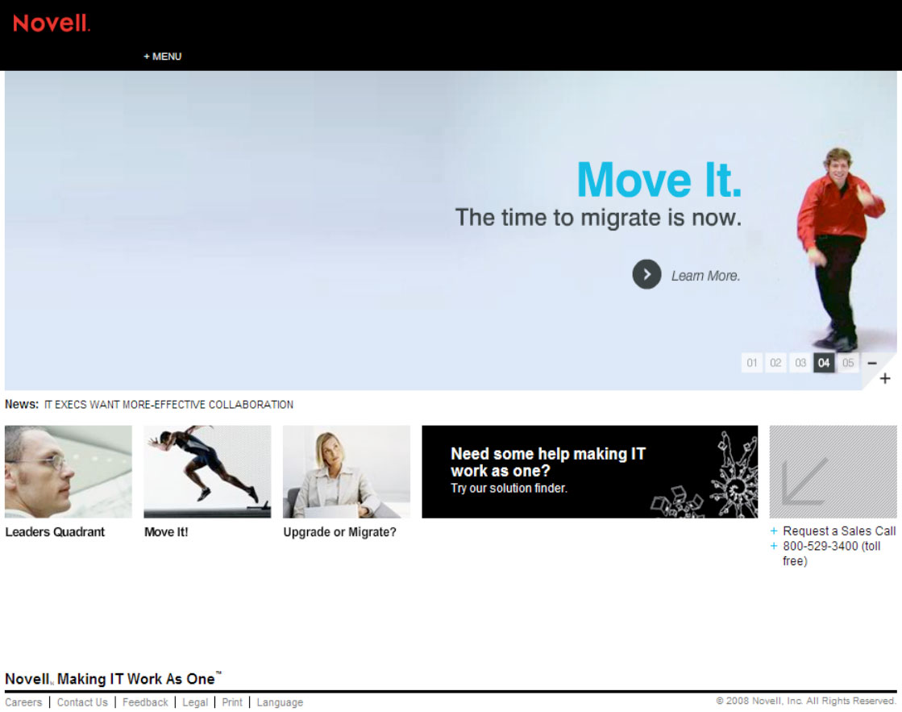
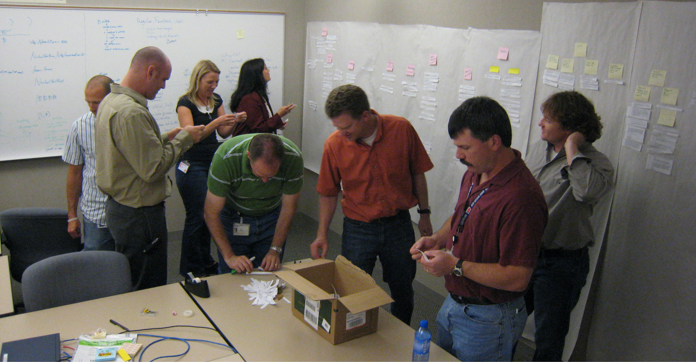
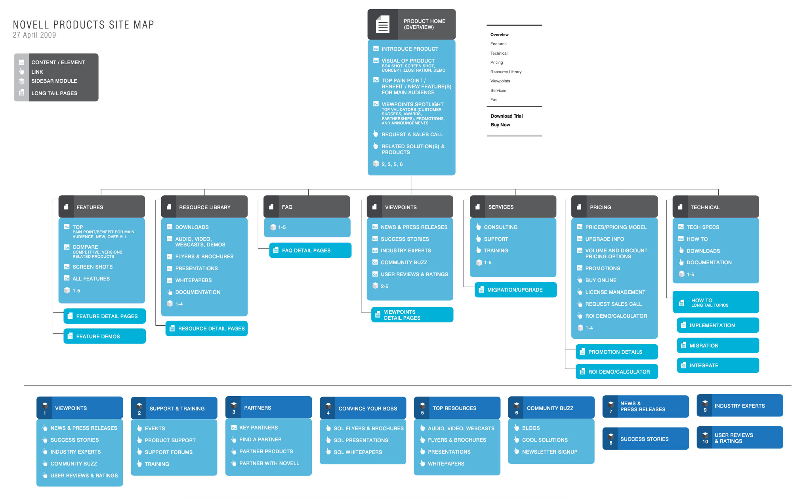
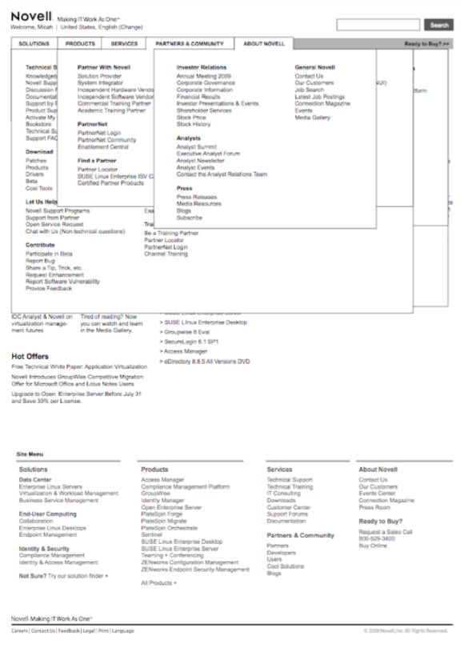
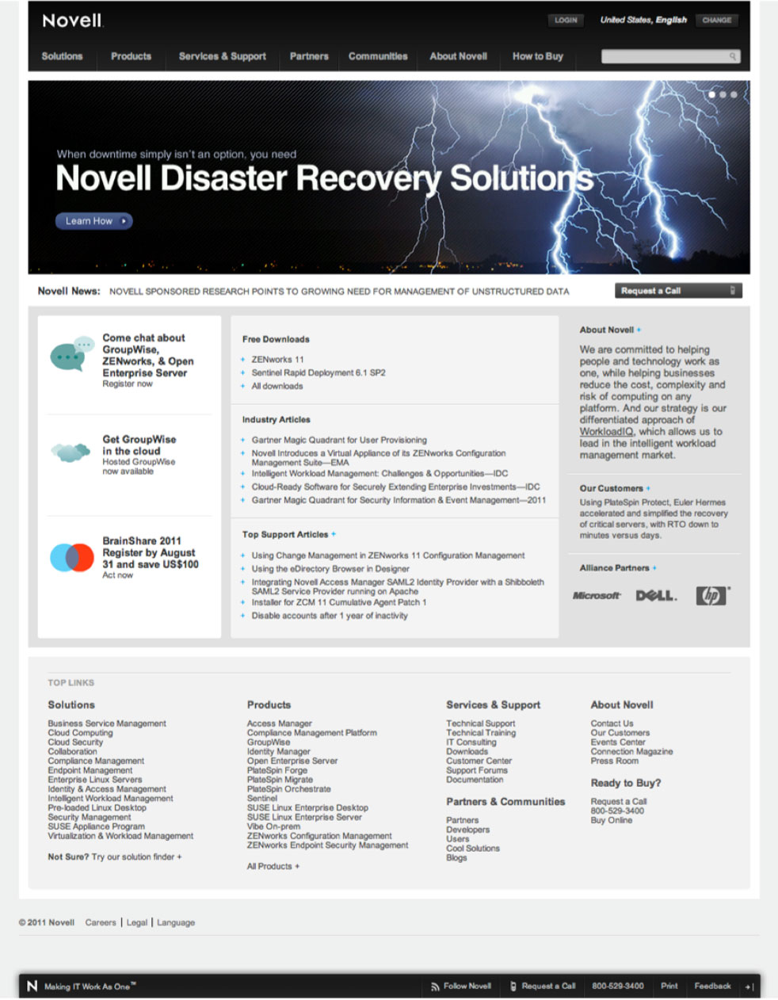

Novell was the industry leader in computer networking back in the day. I worked on a design team in the marketing department for 9 years. When I came on at Novell the website was an afterthought, a glorified brochure site. Over the years, we evolved it to become the company’s number one source for new leads and a strong beacon for the brand.
Creative Direction
Management
User Research
Information Architecture
UX/UI Design
Presentation
We had been making iterative improvements over a twoyear span. We leveraged usability research and usability heuristics to evolve the information architectureand design. Then along came a twist. Novell hired a new CMO and he wanted to quickly make his mark. We rushed to redesign the site based on his feedback, totally throwing our process and previous learning out the door. Long story short, the site launched to a dismal reception. While most metrics were not heavily impacted the user base was not happy and they let everyone know about it. It was for uge disaster.

To get back to the process we knew and trusted, we started with the users. I lead the collection of user feedback and organized several affinity diagram sessions to help make sense of it. We not only identified the biggest problem areas we also gained insight into areas for new improvements.

Next we took another pass at our IA. I started with card sorting exercises to identify the correct buckets and nomenclature. I then build out a simple tree diagram in collaboration with our key partners from each organization in the company. This time around we took advantage of our passionate user base to validate our ideas each step of the way.


After we felt sure the architecture was solid we designed wireframes for all the top level pages and a few deep branches. I oversaw this work, designing the basic layout then working with the design team to complete all the key pages with as close to real content as we could.
Again we tested with our users. Taking the time needed to iterate and test until we felt confident of the basic structure of each page type of the site was solid. I wrote most of the test scripts and moderated many of the sessions. We engaged a vendor to help with recruiting, moderating and reports.
Next came the visual design and final content. I art directed the design team and writers through this process. We worked in concert with content writers to make sure nothing got lost in traditional hand-offs. We tested again with users and this time we went to several location around the country to get more diversity and give executives and extended team members a chance to observe.

Finally after a year of hard work, we launched the site. This time we had a totally different experience. We already new that the core user community liked the site because we included them in the testing and key reviews. There was no shock and backlash like the year before. Rather we were able to focus on the metrics and making sure our key KPIs where improving.
The new product pages saw a 400% increase in leads gathered over the first three months. The design team enjoyed praise from both our business partners and our end users.
We established a cadence of continued testing with users and implementing iterative changes and improvements rather than calling it done and moving on to the next thing.